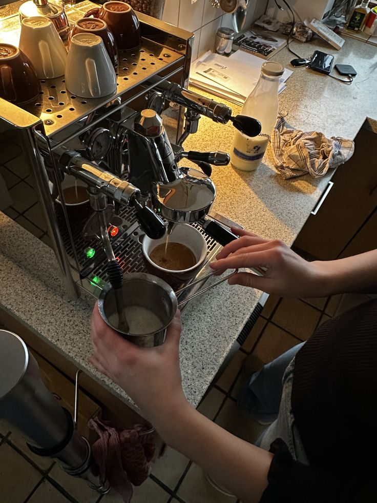

Our Story
Our Approach to Coffee
We are an independent specialty coffee shop located in the heart of Astana. Our philosophy is simple: source exceptional beans, apply precise brewing techniques, and serve honest coffee in a welcoming environment.

We believe that truly exceptional coffee needs no artificial embellishments. It relies entirely on meticulously sourced fresh roasts, precise water filtration, and skilled hands behind the machine. Every step of our process is designed to highlight the natural flavor profiles of our single-origin beans.
From the temperature of our water to the grind size of our espresso, we monitor every variable. This dedication ensures that whether you order a complex pour-over or a classic flat white, the result is balanced, rich, and consistent. The soul of any great cafe is its team, and our head barista completed rigorous professional training in South Korea, bringing back an uncompromising standard of craft discipline.